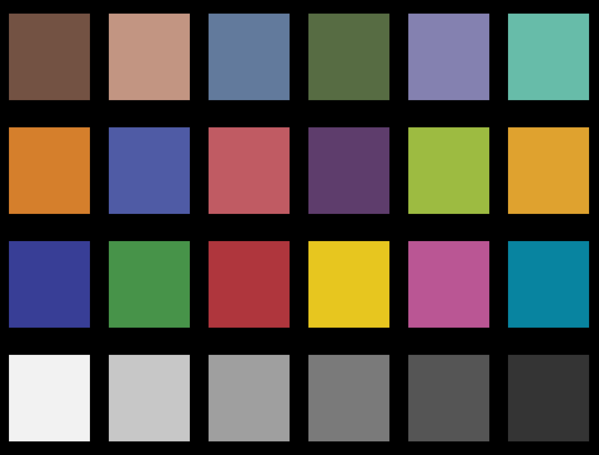
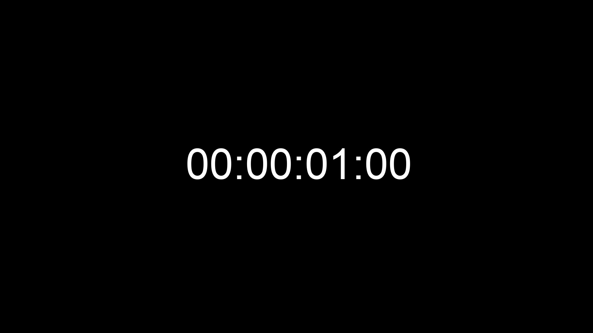
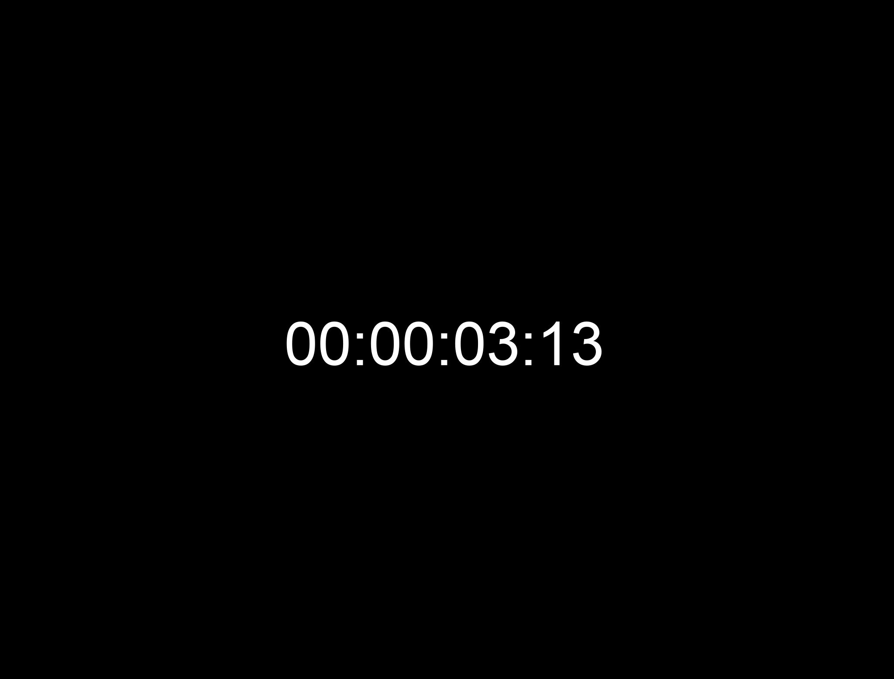

What is this ?
Media-IO is a new framework to process media, including video, audio, subtitle, etc.
Its architecture is plugin oriented to offer the ability to easilly connect new features in various languages, such as C++, Rust, and others.
This project is inspired by FFmpeg/LibAV, upipe, AvTranscoder (C++ binding over FFmpeg/Libav), TuttleOFX.
Its architecture is plugin oriented to offer the ability to easilly connect new features in various languages, such as C++, Rust, and others.
This project is inspired by FFmpeg/LibAV, upipe, AvTranscoder (C++ binding over FFmpeg/Libav), TuttleOFX.
Framework Architecture
Media Framework describes the protocol used in every component.
The C protocol is the core of this project.
On both sides, any language supporting C mangling can be used.
Based on that each component is defined as a plugin. Each one can be detected at the run-time.
The first version of this framework will define:
An important fact is the facility to create new plugin. Each process can be defined in different language (C, C++, Rust, D, etc.) as each one can provide the C ABI required for communication.
The C protocol is the core of this project.
On both sides, any language supporting C mangling can be used.
Based on that each component is defined as a plugin. Each one can be detected at the run-time.
The first version of this framework will define:
- Reader: interface to read data like FileSystem or over HTTP
- Unwrapper: provide access to packets of data for each stream
- Decoder: give the capability to decode a coded stream to raw images
- Generator: generate images based on chart definitions, equations, etc.
- Filter: take image to return a processed version
- Analyser: return computed informations based on image(s)
- Encoder: generate the coded stream
- Wrapper: mux coded streams
- Writer: store wrapped data on storage
An important fact is the facility to create new plugin. Each process can be defined in different language (C, C++, Rust, D, etc.) as each one can provide the C ABI required for communication.
Plugin list
- Read data from local file system
- Read data over HTTP
- Write data to local file system
- Write data over HTTP
- Generate chart image
- Generate constant colored image
- Generator based on SeExpr library
- Unwrapper for DCP essences
- Unwrapper for AS-02 like essences
- Unwrapping content based on FFMpeg library
- Unwrap MXF essences using internal library
- Read image sequences of any type
- Write image sequences of any type
- Wrapper for Mp4/DASH format
- Decoding based on FFmpeg library
- Extract stream information into Jpeg2000 codestreams
- Decoder Jpeg2000 using OpenJpeg library
- Decode TIFF image format
- Encode TIFF image format
- Encode HEVC using TuringCodec
- Convert image to Black And White
- Process Canny filter on image
- Process color transformation based on some profiles (Rec601, Rec709, BT.2020, XYZ, etc.)
- Apply a gamma on image
- Apply math operator on a image (plus, minus, multiply, division)
- Apply a text on image
- Analyse blur on images
- Compare 2 images (mathematically)
- process PSNR measurement between images
- Process some statistical analysis on image
Cloud enable processing with Media-IO
As a new software and with the technology changes, it will be good to provide the capability to distribute processes on various instances.
Regarding other tools, the process is by default contiguous - the entire file will be processed by 1 instance. Some adaptation / hack can provide a per GOP transcoding, to generate parts of the content, and a second step generate the final mux.
In Media-IO, a full distributed architecture is in test. This means each part of the encoding can be done by any deployed instance, providing with that an adapted number of resources to decode but also for encoding.
Regarding the consuming time for encoding (in comparison to the decoding) it can be a great idea to proceed like that. It's also a great opportunity to have some dedicated instances: with boost IO for Unwrapper and Wrapper workers, and maybe GPU instances for Filters and Analysers.
The state of this architecture still in progress, it require a little bit of time to create the base of workers, and an optimised strategy of process.
Regarding other tools, the process is by default contiguous - the entire file will be processed by 1 instance. Some adaptation / hack can provide a per GOP transcoding, to generate parts of the content, and a second step generate the final mux.
In Media-IO, a full distributed architecture is in test. This means each part of the encoding can be done by any deployed instance, providing with that an adapted number of resources to decode but also for encoding.
Regarding the consuming time for encoding (in comparison to the decoding) it can be a great idea to proceed like that. It's also a great opportunity to have some dedicated instances: with boost IO for Unwrapper and Wrapper workers, and maybe GPU instances for Filters and Analysers.
The state of this architecture still in progress, it require a little bit of time to create the base of workers, and an optimised strategy of process.
Use cases
- Generator for IMF App4 plugfest Goal: Generate sequences of images to test capabilities of the standard.
- Color conversion validator for IMF App4 validation Goal: To be able to measure the maximum difference between 2 sequences of images.
- HEVC HDR Proof of Concept (in process) Generate an engine to transcode a broadcast stream into HEVC with information of HDR/HLG.
One sequence is for color test, based on Chart generator.
Other sequences display timecode for different frame rate with various resolutions.
Generator
Chart & Timecode
Chart & Timecode
→
Encode
TIFF Encoder
TIFF Encoder
→
Wrapper
Image sequence
Image sequence
→
Writer
File system
File system

Sequence 1
Sequence 1

Sequence 2
Sequence 2

Sequence 3
Sequence 3
The first one is IMF package generated by participants.
The second source is reference sequence.
For each image, the output report the maximal difference between values.
Reader
File system
File system
→
Unwrapper
ASDCPlib
ASDCPlib
→
Decode
OpenJpeg J2K
OpenJpeg J2K
→
Reader
File system
File system
→
Unwrapper
Image Sequence
Image Sequence
→
Decode
TIFF Decoder
TIFF Decoder
→
Analyser
Diff
Diff
The goal is to achieve a realtime time transcoding in HEVC, based on TuringCodec, with distributed encoders.